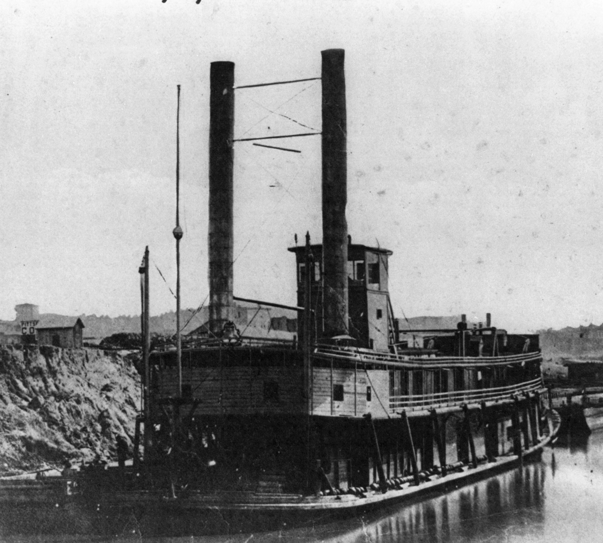
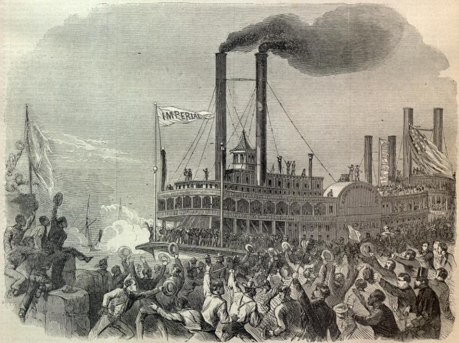

|
The Mississippi River, often called the "big muddy" or
the "father of all waters," played a critical, and some
historians argue decisive, role in the Civil War. After a
stalemate settled on the Eastern Theater in the early part
of the Civil War, Union forces turned to the west. In 1862,
troops moved toward the Mississippi River in an attempt to
control the important water transportation route and the
influential port of New Orleans. If Union forces could
control the lower Mississippi, they would divide the western
from eastern Confederacy. Control of New Orleans would also
block an important Southern supply line as well as give the
North a direct transportation link in the heart of
Confederate territory. In order to make headway in the
|

The Mississippi River was crowded
with the Union Navy's steam-powered ships by the middle
of 1863.
|
western theater, Union troops employed a two-pronged plan of
attack from the north and from the south.
Union success in the western theater rested largely on
cooperation between the Army and Navy. Before the fall of
1862, the Army controlled the operation of Navy riverboats.
The diverse naval gunboat crews that included volunteer
riverboatmen, soldiers, steamboat pilots, and engineers,
among others, did not come under complete U.S. Navy control
until late 1862. This strange duality of command resulted
from the war department's belief that the inland waterways
lay under the Army's purview. Fortunately for the Union, the
Army and Navy commanders in the theater worked well
together, and their partnership ultimately propelled the
Union to victory.
In April 1862, a squadron of Federal vessels, both
ironclad and wooden, gathered in the Gulf of Mexico near the
mouth of the Mississippi River. Under the command of Flag
Officer David Glasgow Farragut, the Union forces easily took
control of weakly guarded Confederate forts at the
Mississippi's entrance. Because the South expected an attack
from the north, their leaders left the southern Mississippi,
especially New Orleans, without adequate protection. The
Union's first major victory occurred just days later on
April 25, 1862, when the important Confederate port of New
Orleans surrendered. The fall of this critical financial and
transportation hub was a major blow to the South. After
securing New Orleans, Farragut continued to move north up
the river. En route, he accepted the surrender of two other
port cities, Baton Rouge, Louisiana, and Natchez,
Mississippi.
Just weeks before Farragut's campaign, Federal naval
forces attacked from the Mississippi Delta. The southward
part of the attack began as Union troops advanced farther
north on the Mississippi River headed towards Farragut's
position. Two Confederate forts guarded the northern
entrance to the interconnected western waterways, Fort Henry
and Fort Donelson. General Ulysses S. Grant believed them to
be vulnerable to attack. On February 6, 1862, Grant attacked
Fort Henry on the Tennessee River, with land troops
attacking from the rear and gunboats shelling from the
river. The Fort's defenders quickly surrendered and Grant
proceeded to Fort Donelson on the Cumberland River.
Confederate forces there put up a stronger defense, but
superior Union naval and infantry forces controlled the fort
by February 16th. Thus, by the time of New Orleans'
surrender in April of 1862, the North had successfully
blocked crucial Southern waterways, effectively halting
Confederate commerce, transportation, and communication on
those routes. Grant also succeeded in driving Confederate
forces out of Kentucky and a large part of Tennessee.
After Grant's initial success in the Western Theater, he
led approximately 40,000 troops south via land and water,
aiming to cut off Southern railroad lines to destroy
Confederate communication and supply lines. As the Federal
army marched through Tennessee, however, Confederate forces
led by Generals Albert Sidney Johnston and P.G.T. Beauregard
surprised the Yankees at Pittsburg Landing on the Tennessee
River. The Battle of Shiloh, which ensued there on April
6-7, 1862, resulted in a very narrow but costly Union
victory The South lost 11,000 men, and the North 13,000.
Shiloh marked a crucial shift for both sides in the Civil
War. The enormous losses were more than double the combined
number killed and wounded at Bull Run, Wilson's Ridge, Fort
Donelson, and Pea Ridge. The battle destroyed the notion
that the War would be won easily.
With Shiloh under Union control, Grant moved on to
capture the central transportation hub of Corinth,
Mississippi. Waterborne diseases such as typhoid and
dysentery helped push Confederate troops out of the area and
allowed Union forces to gain a hold. Rebel-held Fort Pillow
was all that stood in the way of the North controlling the
Mississippi River as far south as Memphis, Tennessee.
Confederates surprised Union forces with a new riverboat
fleet. The steamboats, now set up as armed rams, attacked
Northern vessels and achieved some initial success. The
Union's river fleet quickly adapted some of its own ships,
manned them with riverboat rather than naval personnel, and
quickly out-maneuvered the South, capturing Memphis.
In April 1862, the South held only two influential
Mississippi River ports between Union-controlled New Orleans
and Memphis. One of the strongholds, Vicksburg, Mississippi
(called the "Gibraltar of the Mississippi") had the benefit
of natural protection. Located atop a sheer bluff
overlooking the river, direct access to the city was
treacherous from water due to well-placed artillery and the
natural inland topography itself--wild terrain to the north
and very wet, marshy land to the west--made approach
difficult.
General Grant made an initial attempt to capture
Vicksburg in May and June 1862. Joined by forces led upriver
by Farragut, the Union troops tried to cut a channel to
divert the Mississippi. They hoped to leave the city without
a water source. The arrival of an early summer stopped the
North's attempts. Not only did the plan to cut a new channel
fail, the river's water line surrounding the town lowered to
dangerous levels for the boats. Many Northern sailors,
essentially trapped on their vessels, fell ill and died of
typhoid, dysentery, and malaria. Grant and Farragut
temporarily abandoned their plans to take the city on the
bluff.
In the spring of 1863, however, the North tried again. In
May 1863, Grant began a drive toward Vicksburg. A combined
mass of land troops and sailors moved to an area south of
Vicksburg and attacked the city from the rear. Northern
forces lay siege to the city and wore down local residents
over a six-week period. Vicksburg's soldiers and civilians
waited in vain for Confederate military help to arrive.
Rebel General Joseph E. Johnston's army was their only hope
|

The fall of Vicksburg effectively gave the Union control
of the entire Mississippi River. An 1863 engraving from
Harper's Weekly shows Unionists in the city greeting
the arrival of the U.S.S. Imperial after the siege.
|
to save the city. However, he considered his position too
weak to take on the powerful Union Army. Outmanned and faced
with starvation, Vicksburg commander General John Pemberton
surrendered to Grant on July 4th, 1863.
The last Confederate stronghold fell just five days later
on July 9, 1863. Under the command of Union General
Nathaniel P. Banks, troops laid siege to Port Hudson,
Louisiana. Starving after managing to subsist on a diet of
mules and rats, the outnumbered Rebels in the garrison gave
up when they heard about the Union victory at Vicksburg.
When Banks took Port Hudson, he gained control of the rich
agricultural land along Bayou Teche for the North. With the
entire length of the Mississippi River under the Union flag,
the Federals split the Confederacy into east and west. The
division left Louisiana, Texas, and Arkansas separated from
their allies. Ultimately, Union control of the Mississippi
proved to be a decisive turning point in the war.
Although Union victories on the Mississippi helped ensure
the outcome of the Civil War, they also transformed local
lives and customs. Before the Civil War, the lower
Mississippi River Valley thrived on the connection between
large plantation agriculture and commerce. Newly invented
steamboats moved crops such as cotton and sugar grown by
slaves. After the war, however, many of those steamboats
were transformed into war ships, and the slaves became
freedmen. The war on the river worked to liberate a
population from chattel slavery. It also dramatically
changed the transportation system of the old southwest.
Riverboats quickly lost their preeminence to the new,
steam-powered behemoth, the railroad.
Source: Joan Waugh, ed., Facts on File Encyclopedia of American
History: Civil War and Reconstruction, 1856 to 1869 (New York: Facts on
File, 2003), 234-236.
|